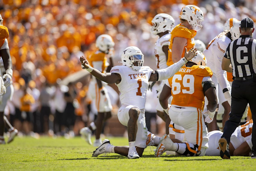
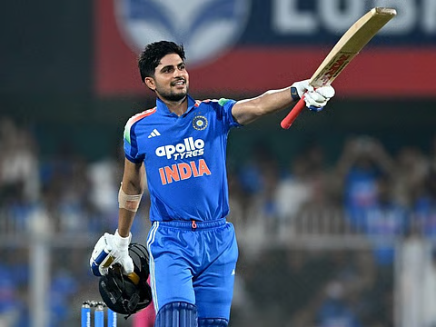
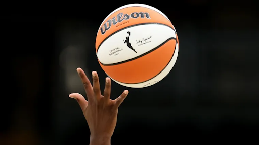
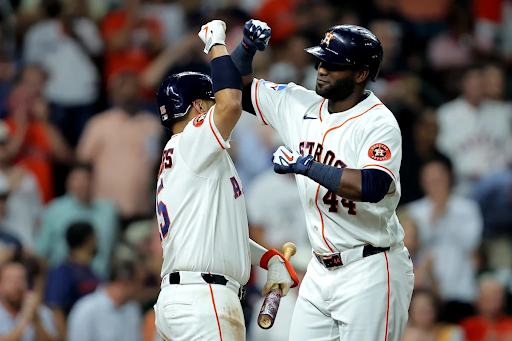
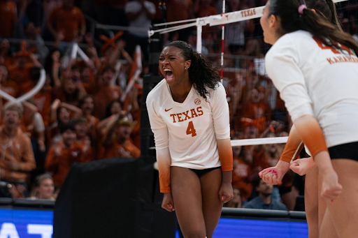
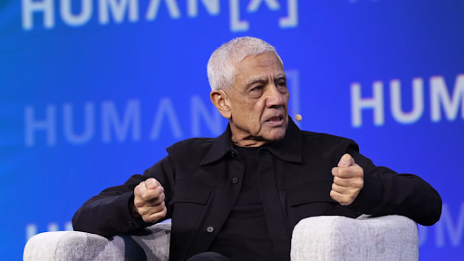

This week’s issue covers the biggest breakthroughs, setbacks and surprises across sports: Colin Simmons’ historic performance, Shubman Gill’s resilience, the WNBA’s record growth, the Astros’ early playoff exit, and Texas Volleyball’s rocky start.
College Football Week 4 Impact on Colin Simmons’ Draft Stock
By Nico Borrelli
Colin Simmons entered Texas in 2024 as a five-star recruit, ranked the No. 1 edge rusher nationally by Rivals. Since then, he has earned SEC All-Freshman Team, Freshman All-American, Shaun Alexander Award, First Team All-SEC, and Second Team All-American honors. Simmons entered the 2026 season as one of the best players in the nation and a top prospect for the 2027 NFL Draft.
After a solid start to his 2026 season with two sacks in Texas’ opening three games, Simmons exploded against Tennessee in Week 4 with five-and-a-half sacks. This performance broke the Texas school record for sacks in a game, previously held by Shane Dronett with five in 1990, and was half a sack away from the all-time college football record of six.

Photo via The Daily Texan
Leading up to the 2027 NFL Draft, Colin Simmons was projected to be a top-ten pick in the draft, with his biggest competition being South Carolina edge rusher Dylan Stewart. In ESPN’s Jordan Reid’s pre-season mock draft, Stewart was selected number six overall, with Simmons being taken two picks later at number eight.
While Colin Simmons had a record-setting Week 4, Dylan Stewart’s week was nothing short of a disaster. In his team’s blowout loss to Alabama, Stewart failed to record a single sack or tackle. On top of that, he was seen arguing on the sideline with his coaches after refusing to leave the field and was flagged for unsportsmanlike conduct after punching an opponent. He was suspended indefinitely by his coaching staff and given a one-game suspension by the SEC.
With a combination of Simmons’ incredible performance and Stewart’s early-season struggles, Simmons now has a strong case to be the top edge rusher in this upcoming draft. There is still plenty of time in the season, but Simmons has put himself in position to separate from his competition and secure a spot near the top of the 2027 NFL Draft.
Cricket
Consistency Isn’t Perfection
By Deepti Adhyam
Imagine preparing for the World Cup, only to have an injury raise questions about your ability to perform in an upcoming series. For Shubman Gill, it was just another challenge along the way.
Before his back-to-back centuries against the West Indies, Gill faced an elbow injury scare during practice. Despite the uncertainty, he stepped onto the field and delivered. In the first ODI, he scored 110 runs off 108 balls. In the second, he followed with a double century, breaking the record for the fastest ODI double century with just 117 balls.

Photo via Gulf News
The numbers are impressive, but the bigger lesson goes beyond the scoreboard.
Gill’s performances show that consistency doesn’t mean producing perfect results every time, but instead, continuing to show up despite unpredictable obstacles. Injuries and pressure can disrupt our plans. But progress depends on how we respond.
He explained to GQ India, “It’s important to identify what is in your control, and what is not,” emphasizing how focusing on aspects of his game that he can control eases the pressure.
We often imagine consistency as perfection. Yet, that is unrealistic.
Consistency can mean studying after a bad test, working after a difficult day, returning after disappointment, or trying again after a frustrating mistake.
Gill’s resilience demonstrates that obstacles don’t end a journey. Remaining committed to a goal requires adapting our expectations while continuing to pursue what we ultimately hope to achieve.
Life isn’t about being at your best every day. It’s about being willing to come back when you aren’t.
WNBA
WNBA Sees Substantial Growth During the 2026 Regular Season
By Gavin Resendez Lopez
With the 2026 postseason underway, this year’s regular season for the WNBA concluded as one of the most successful in recent history. An increase in viewership, attendance and ticket prices, and the release of multiple signature sneakers all point to growth for the league.
In May, the WNBA announced a massive new TV deal, partnering with major broadcast partners Disney, Amazon, and NBC. The deal spans 11 years and is a $3.1 billion investment, expanding the league’s annual revenue estimate to $281 million according to Just Women’s Sports.
Some have argued that the expansion of the WNBA onto multiple platforms makes the viewing experience difficult. However, the regular season was more accessible than ever, with the deal seeing 216 games plus major events such as All-Star weekend being broadcast on national TV.
Results from the new deal were nothing short of productive. According to Sports Business Journal, the WNBA regular season games averaged 771,000 viewers, 17% higher than the previous season. This season also had a total of 51 games with over 1 million viewers, compared to only 19 in 2025.

Photo via The Sporting News
According to Across the Timeline, a total of 3,786,546 fans attended a regular season game, which was around 645,000 more than in 2025. Last season also saw the expansion of the league with the debut of the Golden State Valkyries.
Multiple signature shoes, including the Nike Caitlin 1, have been released this year, further adding to the growth of the league.
With possibly its biggest season ever ending, the postseason will look to be full of action and exciting moments. The semifinals will tip off on Oct. 4, with the matchups between the Las Vegas Aces and Golden State Valkyries on NBC/Peacock, and the Atlanta Dream against the New York Liberty on ABC.
MLB
Sub-Par to Playoffs: The Astros’ Brief October Run
By Emily Cheong
The 2026 MLB postseason has finally arrived after the grueling 162-game regular season. Among all the contenders are the Houston Astros, a team very familiar with this October rush, having reached it nine times in the last ten years.

Photo via Yahoo Sports
As the division leaders of the American League West, they guaranteed themselves another step closer to winning a World Series title. However, their outlook wasn’t strong as they entered the playoffs with a mediocre regular season record of 81–81. This marks one of the very few times in MLB history that a team has made it to the playoffs following a full season with a .500 record or lower.
Nevertheless, the Astros are not unfamiliar with aiming high using the unlikeliest pathway. In 2020, they entered the playoffs with another sub-.500 record after a shortened season from the pandemic. They eventually reached the American League Championship Series with such a record before losing to the Tampa Bay Rays 4–3 in the series.
Throughout the 2026 AL West season, it has always been a race to the bottom. Facing tight races for the number one spot, the Astros and the Rangers went down to the last game to be able to claim that division title. Houston kept its lead until the end with a final-day win.
Yet, despite the desperate fight to get a seat at the MLB postseason table, the Houston Astros faced elimination after being swept 2–0 by the Chicago White Sox in the best-of-three Wild Card round. They said their goodbyes swiftly at home with a 7–3 loss in Game 2.
After an underwhelming season, fans and critics are left wondering what moves the Houston Astros will be making in the offseason after facing a gradual decline since Dusty Baker’s retirement as their manager.
Volleyball
Texas Volleyball Finding Its Footing After Rocky Start
By Cody Feldman
Entering the season, Texas Volleyball came in with high expectations. Ranked second in the AVCA poll and coming off a deep run in the NCAA tournament, the Longhorns looked to build on the powerhouse reputation that they have built as five-time national champions.
However, Texas did not get off to an ideal start this season, losing some key matchups facing an extremely difficult strength of schedule to start the season. They dropped half of their first ten matches, surprisingly only starting the season as a .500 team. The Longhorns proceeded to win their next two, with a 7-5 record as they continue to play through SEC competition. Despite their poor start on paper, Texas is still viewed as a real contender, with all five of their losses coming from ranked opponents.

Photo via Yahoo Sports
The first few matches of the season were particularly slow for Texas, as they were upset by #12 Arizona State in four sets in their first match. After defeating Marquette and #18 TCU, Texas would falter in three of their next four games, losing to #1 Nebraska, #6 Louisville, and #8 SMU, while also defeating #15 USC in that time span.
With a 3-4 record to begin the season, the Longhorns had to make a turnaround before their slump got out of hand. Over the next week and a half, they would begin to heat up, winning four of their next five. Texas would defeat #6 Wisconsin, #13 Tennessee, Mississippi State and Alabama, only losing to #3 Kentucky.
Now ranked eighth in the nation, Texas still has work to do to prove that they belong in the upper echelon of Volleyball teams in the country. As they dive deeper into SEC play, Texas will look to build chemistry and confidence with the most difficult stretches of their schedule behind them and the NCAA tournament ahead.
NFL
Seahawks Sell for NFL-Record $9.6 Billion
By Shreyan Dey
Fresh off a recent Super Bowl LX title, the Seattle Seahawks have become the most expensive franchise sale in NFL history. On August 26th, owners unanimously approved the team’s $9.612 billion sale to a group called Khosla Ventures led by venture capitalist Vinod Khosla and his family.
The price blows past the previous NFL record of $6.05 billion, set when the Commanders were sold in 2023, which is a jump of nearly 60% in just three years. It also came in about 43% above Forbes’ last valuation of $6.7 billion. Only the Lakers’ $10 billion sale ranks higher in current American sports.

Photo via The Wall Street Journal
The deal comes with a few notable details. Vinod Khosla was a minority investor in the San Francisco 49ers, Seattle’s NFC West rival, and league rules required him to sell that stake. The seller’s story stands out too.
Paul Allen bought the team for $194 million in 1997 and is credited with keeping it in Seattle, Washington. His will directed that the Seattle Seahawks be sold after his death and that proceeds end up going to charity. That turns a roughly 50x return into one of the largest philanthropic windfalls in sports history.
The bigger takeaway is what this means for the rest of the league. Scarce ownership opportunities, set media revenue, and a championship brand let the Allen estate sell at the very top of the market, and every future seller will now anchor to this number.
Selling right after a title was a textbook “sell high” move. So the question now is whether the next NFL sale becomes the first to clear $10 billion and take the overall crown from the Los Angeles Lakers.